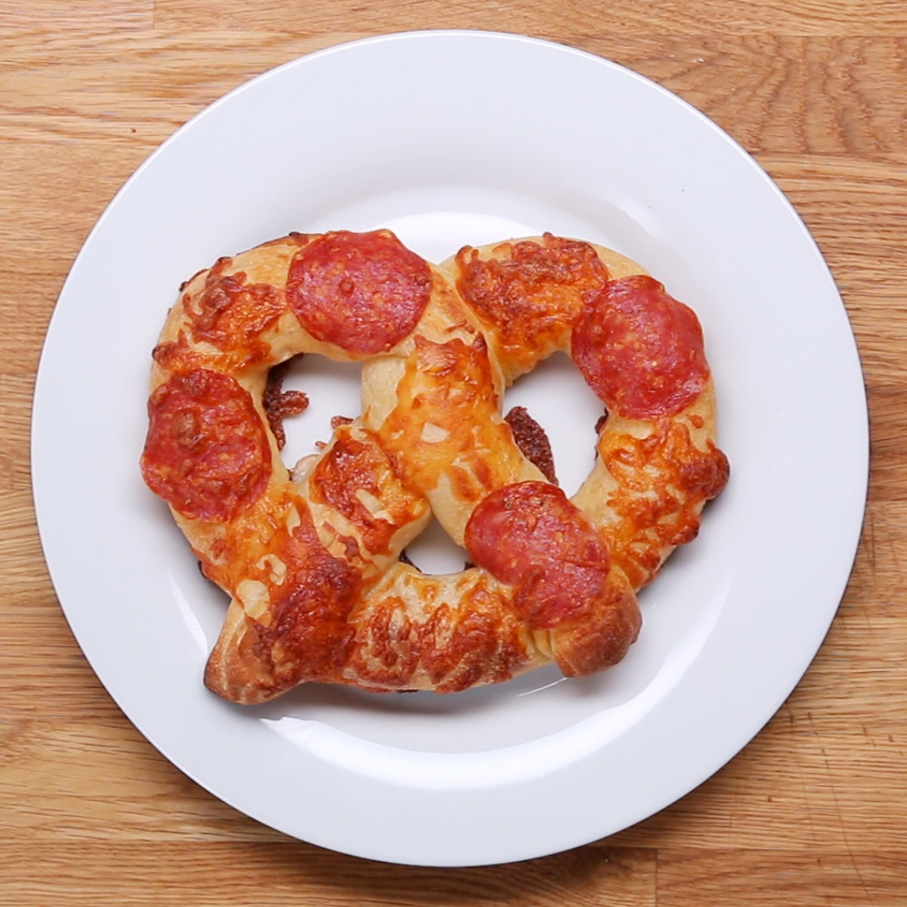

The foundation of every great pretzel crust.
Artisanal Tomato
San Marzano with fresh basil
Honey Mustard Glaze
The classic pretzel pairing
Creamy Garlic Aioli
Rich, roasted garlic spread
Spicy Buffalo
Kick of heat for bold foodies